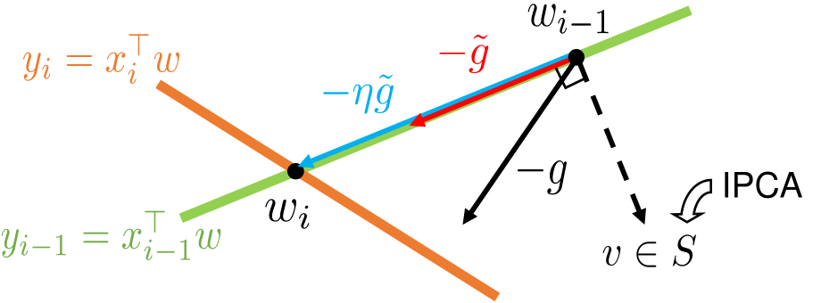

|
I am a graduate student at MIT LIDS, advised by Navid Azizan. I received my undergraduate degree in Electrical Engineering and Mathematical Sciences from KAIST, where I worked with Han-Lim Choi, Hye Won Chung, and Sung-Ju Lee. I also did a research internship hosted by Fadel Adib at MIT Media Lab during summer 2018. My research interests lie in the span of machine learning, optimization, and autonomy. |
|
|
arXiv |
abstract
Recent advances in learning-based control leverage deep function approximators, such as neural networks, to model the evolution of controlled dynamical systems over time. However, the problem of learning a dynamics model and a stabilizing controller persists, since the synthesis of a stabilizing feedback law for known nonlinear systems is a difficult task, let alone for complex parametric representations that must be fit to data. To this end, we propose Control with Inherent Lyapunov Stability (CoILS), a method for jointly learning parametric representations of a nonlinear dynamics model and a stabilizing controller from data. To do this, our approach simultaneously learns a parametric Lyapunov function which intrinsically constrains the dynamics model to be stabilizable by the learned controller. In addition to the stabilizability of the learned dynamics guaranteed by our novel construction, we show that the learned controller stabilizes the true dynamics under certain assumptions on the fidelity of the learned dynamics. Finally, we demonstrate the efficacy of CoILS on a variety of simulated nonlinear dynamical systems. |
|
|
abstract
When machine learning models are trained continually on a sequence of tasks, they are liable to forget what they learnt at the start of training---a phenomenon known as catastrophic forgetting. A simple and effective solution to catastrophic forgetting is orthogonal gradient descent (OGD). OGD projects weight updates into the orthogonal complement of the subspace spanned by prior model gradients. However, as the memory cost of storing prior model gradients grows with the runtime of the algorithm, OGD is ill-suited to continual learning over arbitrarily long time horizons. To address this problem, this paper proposes SketchOGD. SketchOGD leverages matrix sketching techniques to approximate the history of model gradients by a matrix of a fixed, user-determined size. We provide theoretical guarantees on the approximation error of the relevant sketches under a novel metric suited to the downstream task of OGD. Experimentally, we find that SketchOGD outperforms the current variants of OGD given a fixed memory budget. |
|
|
arXiv |
abstract
Occupancy mapping has been widely utilized to represent the surroundings for autonomous robots to perform tasks such as navigation and manipulation. While occupancy mapping in 2-D environments has been well-studied, there have been few approaches suitable for 3-D dynamic occupancy mapping which is essential for aerial robots. This paper presents a novel 3-D dynamic occupancy mapping algorithm called DS-K3DOM. We first establish a Bayesian method to sequentially update occupancy maps for a stream of measurements based on the random finite set theory. Then, we approximate it with particles in the Dempster-Shafer domain to enable real-time computation. Moreover, the algorithm applies kernel-based inference with Dirichlet basic belief assignment to enable dense mapping from sparse measurements. The efficacy of the proposed algorithm is demonstrated through simulations and real experiments. |
|

|
arXiv |
abstract |
bibtex
While deep neural networks are capable of achieving state-of-the-art performance in various domains, their training typically requires iterating for many passes over the dataset. However, due to computational and memory constraints and potential privacy concerns, storing and accessing all the data is impractical in many real-world scenarios where the data arrives in a stream. In this paper, we investigate the problem of one-pass learning, in which a model is trained on sequentially arriving data without retraining on previous datapoints. Motivated by the increasing use of overparameterized models, we develop Orthogonal Recursive Fitting (ORFit), an algorithm for one-pass learning which seeks to perfectly fit every new datapoint while changing the parameters in a direction that causes the least change to the predictions on previous datapoints. By doing so, we bridge two seemingly distinct algorithms in adaptive filtering and machine learning, namely the recursive least-squares (RLS) algorithm and orthogonal gradient descent (OGD). Our algorithm uses the memory efficiently by exploiting the structure of the streaming data via an incremental principal component analysis (IPCA). Further, we show that, for overparameterized linear models, the parameter vector obtained by our algorithm is what stochastic gradient descent (SGD) would converge to in the standard multi-pass setting. Finally, we generalize the results to the nonlinear setting for highly overparameterized models, relevant for deep learning. Our experiments show the effectiveness of the proposed method compared to the baselines.
@inproceedings{min2022one,
title={One-pass learning via
bridging orthogonal gradient descent
and recursive least-squares},
author={Min, Youngjae and Ahn,
Kwangjun and Azizan, Navid},
booktitle={2022 IEEE 61st Conference
on Decision and Control (CDC)},
pages={4720--4725},
year={2022},
organization={IEEE}
}
|

|
arXiv |
abstract |
bibtex
This paper proposes an online learning method of Gaussian process state-space model (GP-SSM). GPSSM is a probabilistic representation learning scheme that represents unknown state transition and/or measurement models as Gaussian processes (GPs). While the majority of prior literature on learning of GP-SSM are focused on processing a given set of time series data, data may arrive and accumulate sequentially over time in most dynamical systems. Storing all such sequential data and updating the model over entire data incur large amount of computational resources in space and time. To overcome this difficulty, we propose a practical method, termed onlineGPSSM, that incorporates stochastic variational inference (VI) and online VI with novel formulation. The proposed method mitigates the computational complexity without catastrophic forgetting and also support adaptation to changes in a system and/or a real environments. Furthermore, we present application of onlineGPSSM into the reinforcement learning (RL) of partially observable dynamical systems by integrating onlineGPSSM with Bayesian filtering and trajectory optimization algorithms. Numerical examples are presented to demonstrate applicability of the proposed method.
@article{park2022online,
title={Online Gaussian Process
State-Space Model: Learning
and Planning for Partially
Observable Dynamical Systems},
author={Park, Soon-Seo and
Park, Young-Jin and
Min, Youngjae and Choi, Han-Lim},
journal={International Journal
of Control, Automation and Systems},
volume={20},
number={2},
pages={601--617},
year={2022},
publisher={Springer}
}
|
|
|
preprint |
abstract |
bibtex |
code
Mapping dynamic and three-dimensional (3-D) environments is essential for aerial robots but challenging to consider the increased dimensions in both space and time compared to 2-D static mapping. This paper presents a kernel-based 3-D dynamic occupancy mapping algorithm, K3DOM, that distinguishes between static and dynamic objects while estimating the velocities of dynamic cells via particle tracking. The proposed algorithm brings the benefits of kernel inference such as its simple computation, consideration of spatial correlation, and natural measure of uncertainty to the domain of dynamic mapping. We formulate the dynamic occupancy mapping problem in a Bayesian framework and represent the map through Dirichlet distribution to update posteriors in a recursive way with intuitive heuristics. The proposed algorithm demonstrates its promising performance compared to baseline in diverse scenarios simulated in ROS environments.
@inproceedings{min2021kernel,
title={Kernel-Based 3-D Dynamic
Occupancy Mapping with
Particle Tracking},
author={Min, Youngjae and
Kim, Do-Un and Choi, Han-Lim},
booktitle={2021 IEEE International
Conference on Robotics
and Automation (ICRA)},
pages={5268--5274},
year={2021},
organization={IEEE}
}
|

|
arXiv |
abstract |
bibtex
This paper considers the problem to plan mobile sensor networks for target localization task in GPS-denied environments. Most researches on mobile sensor networks assume that the states of the sensing agents are precisely known during their missions, which is not feasible under the absence of external infrastructures such as GPS. Thus, we propose a new algorithm to solve this problem by: (i) estimating the states of the sensing agents in addition to the target?�s through the combination of a particle filter (PF) and extended Kalman filters (EKF) and (ii) involving the uncertainty of the states of the sensing agents in planning the sensor networks based on the combined filters. This approach does not require any additional internal/external sensors nor the prior knowledge of the surrounding environments. We demonstrate the limitations of prior works in GPS-denied environments and the improvements from the proposed algorithm through Monte Carlo experiments.
@inproceedings{min2020informative,
title={Informative Planning of Mobile
Sensor Networks in GPS-Denied Environments},
author={Min, Youngjae and Park, Soon Seo
and Choi, Han-Lim},
booktitle={AIAA Scitech 2020 Forum},
pages={1342},
year={2020}
}
|

 |
arXiv |
abstract |
bibtex
This paper investigates non-myopic path planning of mobile sensors for multi-target tracking. Such problem has posed a high computational complexity issue and/or the necessity of high-level decision making. Existing works tackle these issues by heuristically assigning targets to each sensing agent and solving the split problem for each agent. However, such heuristic methods reduce the target estimation performance in the absence of considering the changes of target state estimation along time. In this work, we detour the taskassignment problem by reformulating the general non-myopic planning problem to a distributed optimization problem with respect to targets. By combining alternating direction method of multipliers (ADMM) and local trajectory optimization method, we solve the problem and induce consensus (i.e., high-level decisions) automatically among the targets. In addition, we propose a modified receding-horizon control (RHC) scheme and edge-cutting method for efficient real-time operation. The proposed algorithm is validated through simulations in various scenarios.
@article{park2019distributed,
title={A distributed ADMM approach
to non-myopic path planning
for multi-target tracking},
author={Park, Soon-Seo and Min, Youngjae
and Ha, Jung-Su and Cho, Doo-Hyun
and Choi, Han-Lim},
journal={IEEE Access},
volume={7},
pages={163589--163603},
year={2019},
publisher={IEEE}
}
|

|
arXiv |
abstract |
bibtex |
slides
Guiding the design of neural networks is of great importance to save enormous resources consumed on empirical decisions of architectural parameters. This paper constructs shallow sigmoid-type neural networks that achieve 100% accuracy in classification for datasets following a linear separability condition. The separability condition in this work is more relaxed than the widely used linear separability. Moreover, the constructed neural network guarantees perfect classification for any datasets sampled from a separable probability distribution. This generalization capability comes from the saturation of sigmoid function that exploits small margins near the boundaries of intervals formed by the separable probability distribution.
@inproceedings{min2019shallow,
title={Shallow Neural Network can
Perfectly Classify an Object following
Separable Probability Distribution},
author={Min, Youngjae and Chung, Hye Won},
booktitle={2019 IEEE International
Symposium on Information Theory (ISIT)},
pages={1812--1816},
year={2019},
organization={IEEE}
}
|
 |
|
 |
|
|